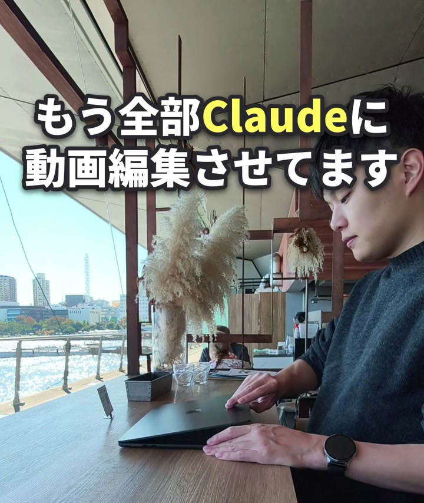
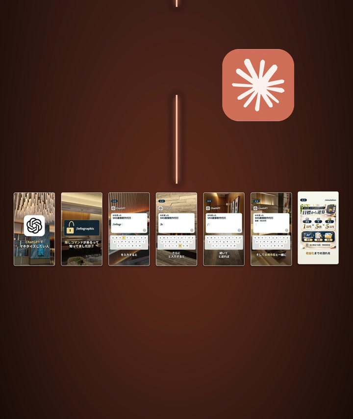
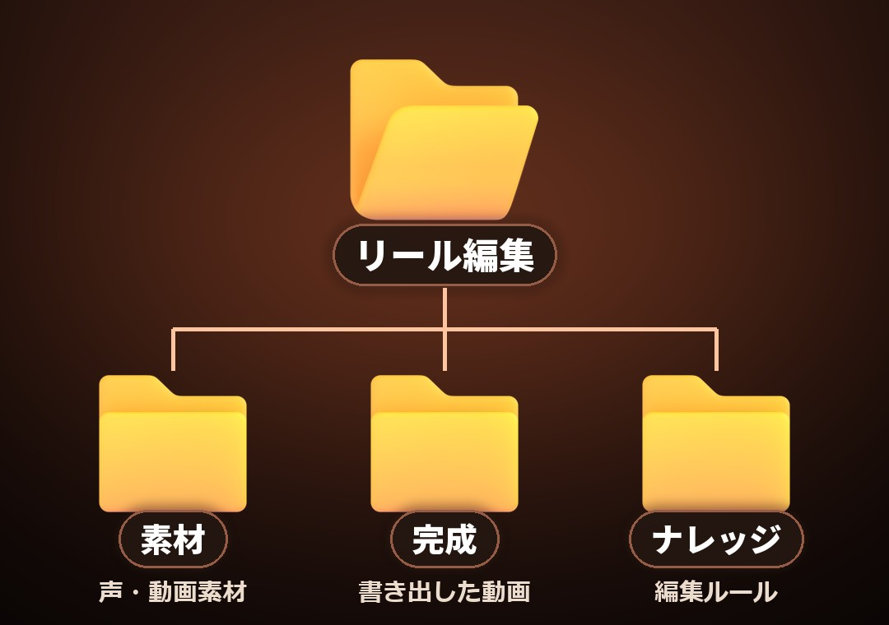
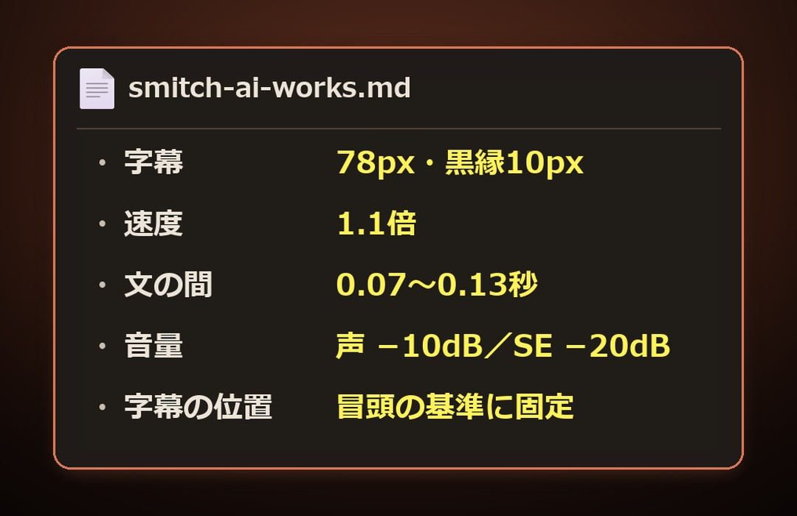
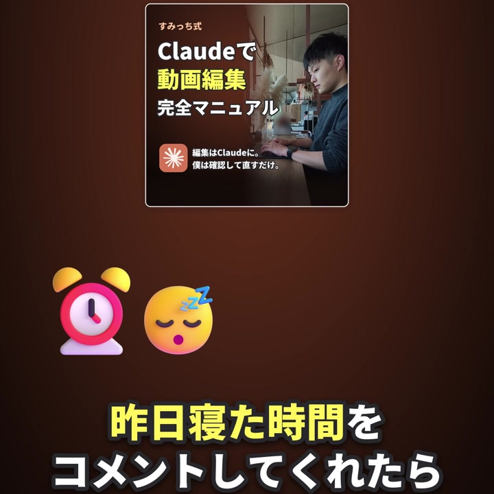
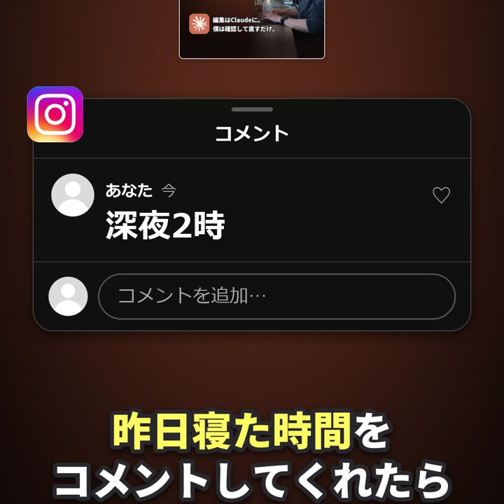
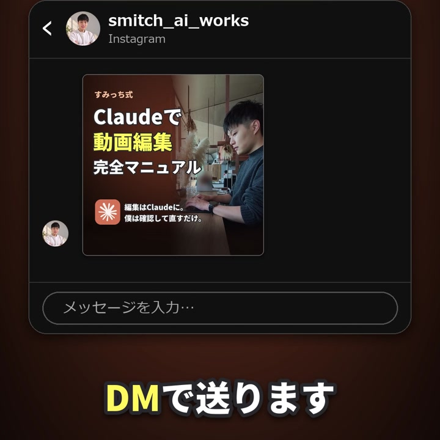

解説動画
実演動画は準備中です。

自分の声から、
Claudeでリールを作る。
カットと字幕に手が止まったら、お手本1本を渡して編集を任せてみてください。


僕はセリフの間と、話したことが画面で伝わるかを見ます。OKした間と動きは次回にも残します。
アプリとフォルダを用意
2フォルダを3つに分ける

この3つを「リール編集」の中に作ります。
3Codeに作業先を渡す
新規チャットで「ローカル」を選び、「リール編集」を指定します。
指示文を見る
このチャットで開いた「リール編集」フォルダを確認してください。 直下の「素材」「完成」「ナレッジ」の有無と、「素材」に入っているファイル名を教えてください。 3つのフォルダのうち無いものだけ作ってください。既存ファイルは削除・上書き・移動しないでください。この指示文を保存
5秒試して、お手本を渡す
4テスト動画を開く
短い動画を「素材」へ。完成/テスト.mp4を開き、尺・字幕・縦型表示を確認。
指示文を見る
「リール編集」フォルダで、縦型リールを作る準備をしてください。 FFmpegとPython、日本語が表示できるフォントを使えるか確認してください。追加で必要なものがあれば、名前・公式の入手先・用途を説明し、僕のOKを待ってください。 「素材」にある動画のうち1本を選んでファイル名を示し、約5秒にカットして「テスト」という日本語字幕を重ね、「完成/テスト.mp4」に書き出してください。仕様は縦1080×1920です。 元動画は変更せず、同名のテスト動画があれば別名で保存してください。書き出した場所を教えてください。この指示文を保存
5お手本を編集ルールにする
「素材」にお手本を入れ、指示文にファイル名を記入。できた編集ルール.mdを開きます。
指示文を見る
「素材」フォルダにある【お手本のファイル名】を、今回のリールのお手本として分析してください。 冒頭・本題・締めから代表的な場面を選び、時刻つきで次を表にしてください。 ・カット間隔、声の文と文の間 ・字幕の位置、サイズ、色、縁取り ・画面に何が出て、セリフに合わせてどう変わるか ・どの動きで、何の効果音が鳴るか 境目は前後のフレームも見て、判断できない数値には「未確認」と書いてください。分かる範囲で画面の寸法や時刻を測ってください。 「ナレッジ/編集ルール.md」に「お手本から読み取ったこと」として残してください。既存の確定ルールは上書きしないでください。この指示文を保存

6自分の声と素材で1本作る
声と動画を「素材」へ。指示の【 】を埋め、「完成」のMP4を通して再生します。
指示文を見る
「ナレッジ/編集ルール.md」を読み、「素材」にある【自分の声のファイル名】と【使う動画素材のファイル名】で縦型リールを1本作ってください。「素材」にある【お手本のファイル名】は分析用です。 ・採用するテイクを選び、言い直しと不要な間を詰め、語頭・語尾を残す。 ・お手本の画面構成と展開を参考に、セリフごとに何を見せるか、どう動くか、何の音を合わせるかを決める。 ・字幕と画面の変化を該当する発話に合わせる。完成前に、各場面に同じ説明が重なっていないか確かめる。 ・BGMは【後で自分で付ける／使用する音源名と入れ方】に従う。 「完成」に縦1080×1920のMP4を別名で保存してください。元素材はそのままにして、保存先と冒頭・中盤・締めの編集判断を短く教えてください。この指示文を保存
「テンポが悪い」を、直せる指示にする
間 「語尾を残して、文と文の空白を詰めて」
文間の中央値 0.20秒 → 0.08秒
「昨日寝た時間」を打つ場面に


そのあと、DMに届く場面を見る

「『深夜2時』をコメントして、DMに表紙が届くところまで見せて」
指示文を見る
「完成」フォルダの【直す動画のファイル名】を修正してください。 修正箇所：【時刻とセリフ】 変更内容：【今どう見える／聞こえるか → こう変えてほしい】 同じ種類の問題がほかの場面にもあれば、該当する時刻を挙げて同じ基準で見直してください。変更する範囲と終わりの見え方を確認し、修正版を「完成」に別名で保存してください。 直した箇所と確認方法を教えてください。編集ルールへの確定は、僕が修正版を確認してOKしてからです。この指示文を保存
修正版を再生し、OKした間・字幕・動きを編集ルール.mdへ。次の編集でも最初に読ませます。
指示文を見る
確認した【OKを出した動画のファイル名】から、次回にも使う編集判断を「ナレッジ/編集ルール.md」に追記してください。 字幕の位置・サイズ・色、声の間、声や効果音の設定は、測定値または実際に使った値を単位つきで書いてください。確認できない値は未確認としてください。 動きは「どの言葉で、何が出て、どう変わり、どこまで残すか」を書いてください。今回だけの指定は「この動画だけ」に分けてください。 最後に、保存先・追記したルールを読み返し、次のチャットで作業を頼むときに最初に渡すファイル名を教えてください。この指示文を保存
1本できたら、次は何を発信するか。
誰のどんな悩みを解決するか。何を伝えて、見た人にどう動いてほしいか。僕は先にここを決めます。
投稿ネタに迷う会社員に、職場でよく聞かれる質問を投稿にする方法を見せ、下書きを1本書いてもらう。
こうした発信を集客や収益につなげる考え方は、『AIマネタイズの教科書』にまとめています。